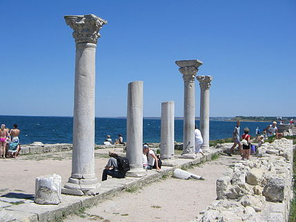
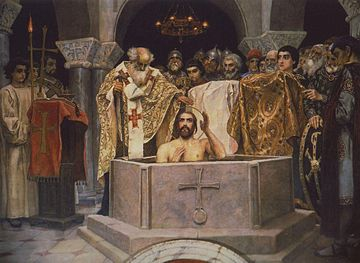
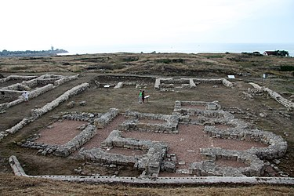
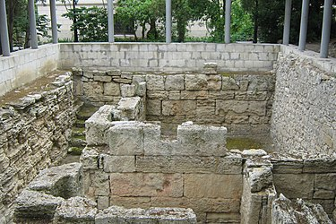

Херсонес Таврійський

Історія
Поліс, місто-держава
Достеменно дата заснування Херсонеса Таврійського не встановлена. Протягом майже всього ХХ ст. загальноприйнятою вважалася дата заснування 422—421 рр. до н. е. греками-дорійцями з Гераклеї Понтійської разом із беотійцями за знаменням Дельфійського оракула як грецький поліс на північному узбережжі Чорного моря і за античної доби став важливим торговельним, ремісничим і політичним центром південно-західного узбережжя Таврики. Херсонес розміщений між Карантинною і Пісочною бухтами в межах сучасного міста Севастополя. Проте найдавніші археологічні знахідки в Херсонесі — уламки чорнофігурної кераміки — датуються рубежем третьої і четвертої чверті VI століттям до н. е., що надало дослідникам аргументів для передатування заснування міста, про що досі точаться дискусії. За свідченням Страбона, поряд з Херсонесом Таврійським розташовувалося інше місто, яке Страбон називає Давній Херсонес, і яке в науковій літературі отримало найменування «Страбонів». Херсонес Таврійський є одним із найяскравіших прикладів планування міста античного архітектора Гіпподама, в основу якого покладена система поздовжніх і поперечних вулиць, які перетинаються під прямим кутом, утворюючи квартали — інсули. У другій чверті-середині IV ст. до н. е. за очільництва Агасікла Гераклейський півострів було розмежовано на сільськогосподарські наділи — клери, що належали громадянам полісу, що сформували округу Херсонеса — хору. Клери розділяли поздовжні і поперечні дороги, що перетиналися на місцевості під прямими кутами. Економічний і політичний розквіт Херсонесу Таврійського за античного часу припадав на IV—II ст. до н. е. Він був демократичною державою, територія якої до ІІІ ст. до н. е. поширилася і на Північно-Західну Таврику, доєднавши Керкінітиду, Калос-Лімен і інші грецькі міста і поселення на Західному узбережжі Таврики. Херсонес мав власний монетний двір. Основою його економіки було землеробство, тваринництво, морські промисли, виноробство, інші ремесла і торгівля.
Історик Сіріск
У III ст. до н. е. в Херсонесі жив і працював історик Сіріск, перший історик на теренах України. Сіріск зробив опис історії міста Херсонеса та його взаємин з Боспорським царством, однак його праці не збереглися.
Боспорське царство
За весь час існування міста-держави херсонесцям доводилося вести численні війни. У II століття до н. е. Херсонес вів тривалу війну з пізньоскіфською державою Скілура[5]. Була втрачена Керкінітида, зруйнований Калос-Лімен, ворог неодноразово стояв біля воріт міста. Херсонес був змушений звернутися за допомогою до понтійського царя Мітрідата VI Євпатора, який скерував до Криму великий загін на чолі з полководцем Діофантом. Діофант на чолі об'єднаної армії, куди входили херсонеські і понтійські війська, протягом трьох кампаній (у 110-107 рр. до н. е.) розгромив скіфів, взяв Феодосію, дійшов до Керченського півострова й захопив Пантікапей. Проте Херсонесу не вдалося зберегти свою самостійність: він увійшов до складу держави Мітрідата.
Стародавній Рим
Після смерті Мітрідата VI Євпатора політична карта всього Східного Середземномор'я кардинально змінилася. Вибираючи з двох бід меншу, херсонесці вирішили «стати під тверду руку» Риму як «вільного міста» і позбутися принизливої опіки царів Боспору. Імператор Риму Гай Юлій Цезар прийняв Херсонес під опіку Риму. Однак пізніше, ідучи за своїм улюбленим принципом «розділяй і володарюй», римські імператори то підпорядковували місто своїм союзникам — боспорським царям, то надавали йому «свободу», коли необхідно було стримати амбіції боспорських монархів. У перших століттях н. е. в Херсонесі затверджується олігархічна республіка, влада в якій належала незначному колу впливових, знатних і лояльних Риму громадян. У 60-ті роки I століття римляни організували велику військову експедицію в Таврику, щоб дати відсіч пізньоскіфським військовим об'єднанням, які знову загрожували містові. Після розгрому скіфів військами трибуна Плавтія Сільвана Херсонес стає форпостом римських військ у Північному Причорномор'ї. У цитаделі міста, змінюючи і доповнюючи один одного, стояли загони I Італійського, XI Клавдієвого та V Македонського легіонів з провінції Нижня Мьозія (територія сучасної Болгарії), а в херсонеській гавані базувалися кораблі Мізійського Флавієвого флоту. У місті розташовувалась ставка військового трибуна, якому підпорядковувалися сухопутні й морські сили в Криму. Через загрозу вторгнення гунської орди в останній чверті IV ст. римське командування передислокувало у Таврику легіон Balistarii Seniores, що підпорядковувався військовому магістру Сходу, а згодом склав основу херсонеського гарнізону.
Християнство Херсонесу
Південно-Західна Таврика містить чимало свідчень існування ранньохристиянських громад, одна з яких знаходилась безпосередньо в Херсонесі. На території Херсонеського городища в його центральній частині відкрита крипта із християнським храмом у дворі заможного будинку херсонеситів. Чіткого датування цієї споруди немає, проте, виникнення над нею в часи після офіційного хрещення Херсонеса наземної церкви, вписаної абсидою в абсиду крипти, вказує на існування секти християн ще за часу їх переслідувань. Є три основні версії проникнення християнства в Херсонес (заслання Св. Климента (римська версія), апостольська діяльність Андрія Первозваного (константинопольська версія), місія Св. Василія і послідовників (Житія Св. єпископів Херсонських, єрусалимська версія). На початку IV століття в Херсонесі була заснована християнська єпископська кафедра. У 301 р., за часів імператора Діоклетіана, Патріарх Єрусалимський Гермон послав у країну тавроскіфів, в місто Херсонес, єпископів Єфрема та Василія. У 310 році дізнавшись про мученицьку смерть святителів Єфрема й Василя, Патріарх направляє в Крим трьох його сподвижників — єпископів Євгена, Елпідія і Агафодора. У V столітті християнство стає офіційною релігією. Руйнуються пам'ятки античного мистецтва, театр, храми, їх заміняють християнські церкви, каплиці. У складі Римської держави в IV—V століттях місто вело війни із варварами, серед яких особливо відзначалися гуни. У V ст. н. е. Херсонес підпорядковується Візантії, яка в VI ст. оточує Південно-Західну Таврику вервечкою фортець, паралельно навертаючи в християнство навколишніх варварів, серед яких переважали гото-алани. Херсонес, захищений потужними оборонними стінами, продовжує жити ще тисячоліття.
Візантійська імперія
У V столітті Херсонес увійшов до складу Візантійської імперії. З V до XI століття Херсонес був найбільшим містом на північному березі Чорного моря і важливим центром візантійської культури. З IX століття він став однією з її військово-адміністративних областей (фем) як Херсон. До того часу змінився не тільки зовнішній вигляд середньовічного міста, а і його ім'я: візантійці називали його Херсоном, слов'яни — Корсунем. 581 року Херсонес обложило військо Тюркського каганату, що переправилося через Керченську протоку у Крим 576 року.
Херсонес у руській політиці
За цей півтисячолітній період своєї історії Херсонес опинявся на перехресті військово-політичних інтересів Хозарського каганату, Київської Русі, печенігів і половців. У 988 році київський князь Володимир Святославич після кількох місяців облоги захопив місто. Взяття Корсуня дало змогу Володимирові диктувати свої умови візантійському імператорові Василію II і одружитися з візантійською царівною Анною. У свідомості давньоруських літописців захоплення Корсуня нерозривно пов'язане з Хрещенням Русі та поширенням християнства. Показово, що наступні кілька століть економіка Херсонесу зростає, місто багатшає і розширює свої межі.
Трапезундська імперія
З початку XIII століття (від захоплення Константинополя хрестоносцями) Херсонес опинився в залежності від Трапезундської імперії.
Генуя й татари
Після падіння Константинополя і Києва важливість Херсонесу, як складової складної системи торговельних шляхів зникла. Місто починає занепадати. У середині XIV століття, коли торгівлю на Чорному морі монополізували генуезці, Херсонес швидко занепав і був знищений татарами (1299 р. — нападом Ногая). Великий князь Литовський Ольгерд розбив кримськотатарське військо в 1363 році поблизу гирла Дніпра та продовжив свій похід у Криму, спустошивши Херсонес і захопивши тут всі цінні церковні предмети. Його наступник Вітовт в 1397 році пішов на Крим, дійшов до Кафи і знову зруйнував Херсонес. У 1399 році темник Золотої Орди Едигей захоплює і спалює місто. Попри існування на місці Херсонеса-Херсона поселення XV ст., воно вже не мало ані міського характерного попереднього планування, ані традиційності районування. Розкопками найпізніших районів було знайдено кістяки людей, які лежали під стінами споруд на вулицях в нехарактерних для обряду поховання позах, що є одним із основних свідчень про знищення міста, коли загиблих нема кому було ховати. Після цього нищівного удару Херсонесу вже не судилося піднятися. Херсонес був насамперед торговим містом і загинув не лише внаслідок нападів та плюндрування, а й через дедалі більшу конкуренцію з генуезцями і венеціанцями, що створили власну мережу фортець — Каламіту, Чембало, Чоргун, Сугдею, Кафу та інші.
Державний лад
Херсонес був класичним грецьким полісом з демократичною системою управління. Вищим органом влади були народні збори всіх вільних громадян чоловічої статі, які досягли повноліття. Народні збори приймали закони і вирішували найважливіші питання. Повсякденним життям міста керували виборні колегії, які здійснювали спостереження за всією діяльністю жителів міста. Історики припускають, що члени ради обиралися на місяць, а її секретар (грамматевс) — на рік. Ім'я царя (базилевса) було епонімом, тобто його ім'ям називався і датувався рік. Від стародавньої високої посади царя збереглися почесні, але тільки формальні релігійні функції. Для командування військом обиралася колегія стратегів, пізніше їх замінили архонти. Колегія деміургів охороняла чистоту демократичного ладу. У місті існували народний суд і спеціальні посадові особи — дікасти (судді). Рішення суду приймалися за допомогою голосування остраконами або камінчиками, тобто таємним голосуванням. Державна скарбниця і священні суми перебували у віданні різних осіб, які також обиралися народом, а після закінчення терміну служби звітували перед народними зборами про проведені витрати. Агораноми спостерігали за порядком на ринку, астіноми — за точністю мір ваги та об'єму, імена останніх карбувалися на монетах і ручках амфор. Як і в інших античних державах, в Херсонесі надавали великого значення фізичному вихованню та навчанню. Тому тут існувала особлива посада гімнасіарха. Всі ці посади були виборними, вибори проводилися або хейротонією (голосування підняттям рук), або за жеребом. До числа найважливіших посадових осіб належали номофілаки — магістрати, характерні виключно для аристократичних та олігархічних держав, де вони мали право накладати покарання, призначати послів тощо. Така риса аристократичного устрою пов'язана із необхідністю бути в постійній військовій готовності, коли представники найзаможніших родин виступають основою збройних сил. Політична історія Херсонесу V—II ст. до н. е. майже невідома. Мабуть, тільки один, але зате дуже важливий період висвітлений у джерелах дуже повно. З III в. до н. е. грізною силою в Тавриці стають пізні скіфи. Розрізнені їх племена, що разом із місцевим населенням Нижнього Подніпров'я, Подністров'я і Нижнього Побужжя просуваються до Криму із зсушеного внаслідок кліматичних змін степу, поступово переходять до осілого способу життя (седентарізіція), землеробства (поряд зі скотарством), утворення племінних союзів. Політичне їх об'єднання завершується створенням великої держави з центром у Неаполі («Нове місто», руїни його — на південно-східній околиці сучасного Сімферополя). На чолі його стає розумний і енергійний монарх-династ — цар Скілур. Пізньоскіфська знать мріє про багатства грецьких міст, прагне захопити в свої руки узбережжя з його заморською торгівлею. У I столітті до н. е. Херсонес втратив демократичну форму правління, потрапивши в залежність від Римської імперії і довго служив основним форпостом її політики в Північному Причорномор'ї.
Економіка
Торгівля Херсонесу була переважно посередницькою. Власне, і постання Херсонеса, як класичного поліса, відбулось після створення Афінського морського союзу. З грецьких міст Малої Азії, островів Егейського моря та материкової Греції (Гераклея, Синоп, Делос, Родос, Афіни) купці привозили сюди прикраси з дорогоцінних металів, зброю, розмальований чорно-лаковий посуд, оливкову олію, мармур тощо. Частина цих товарів перепродувалася сусідам — скіфам. Значну частку херсонеського експорту становили товари: хліб, худоба, шкіри, хутра, мед, віск, а також раби. Гераклійський півострів херсонесці перетворили на свою сільськогосподарську зону — так звану хору, де були споруджені укріплення, садиби, розмежовані наділи, зазеленіли виноградники і сади (пор. Поселення Панське). Виноградарство та виноробство склало основу місцевого сільського господарства. У самому місті розвивалися ремесла: гончарне, ковальське, ливарне, будівельне й косторізне. У всі часи жителі Херсонесу були чудовими мореплавцями і рибалками. Римський протекторат сприяв економічному піднесенню в I—III століттях. Городяни активно зміцнювали міські стіни і вежі, споруджували нові храми, будували терми (лазні), перебудовували амфітеатр, провели декілька гілок водогону. Херсонес вів жваву торгівлю з великими торговельно-ремісничими центрами Чорного і Середземного морів, і насамперед зі своїми традиційними партнерами на південному березі Понту — Гераклеєю, Синопом, Амісою, Амастрією. У Херсонесі періодично поновлювалося карбування золотих монет (див. Монетний двір (Херсонес)). До товарів, що традиційно імпортувалися в місто, додалися витончений скляний та бронзовий посуд, різноманітна червоно-лакова кераміка, прянощі. З міста у великих обсягах вивозилася сільськогосподарська продукція, шкіри, солона і сушена риба, рибні соуси. У цей час рибальство перетворюється на самостійну галузь міського господарства. В ході розкопок виявлено приблизно сотню рибозасолювальних цистерн, місткість деяких з них сягала 30—40 тонн. Після захоплення Херсону Володимиром, Візантія уклала з Київською Руссю рівноправний союз. Херсону, який служив посередником у торгівлі, цей союз був дуже вигідний. Звідси в Малу Азію і Візантію відправляли продукти сільського господарства і тваринництва; з південних країн у Херсон і далі, на північ, везли зброю, тканини, олію. У XI—XII століттях спостерігається деяке ослаблення торгово-економічних позицій Херсона. Однак місто ще зберігало своє значення як опорний пункт візантійської військово-політичної присутності в регіоні, що підтверджують знахідки печаток Севастії — вищих чиновників, членів імператорських родин. Згодом могутність Візантії ослабла, і в XIII столітті торгівля на Чорному морі опинилася в руках італійських (венеціанських, а потім генуезьких) купців, які заснували у Криму свої факторії. Торгові шляхи перемістилися до Східного Криму, і це стало однією з причин занепаду економіки Херсонеса. До середини XV століття життя в Херсонесі остаточно згасло.
Городище Херсонеса Таврійського
Херсонеське городище є залишками античного міста Херсонес Таврійський (за Візантії — Херсон). Виникло місто на мисі між Карантинною і Пісочною бухтами в його північно-східній частині навколо давнього порту, що продовжував функціонувати протягом всієї історії міста. В цій частині було знайдено найдавнішу античну кераміку останньої третини VI ст. до н. е., проте виникнення міста в цей час піддано  критиці. Є підстави стверджувати про будівництво фортифікаційних споруд — стін із вежами і в'їздами вже у V ст. до н. е., але збережені будівельні залишки оборонних стін відносяться до ІІ чверті — середини IV ст. до н. е. і пов'язуються із ім'ям і постаттю Агасікла. Початково оборонні споруди відокремлювали землі північно-східного району Херсонеса із портом. На зламі IV ст. до н. е. територія міста збільшується більш ніж удвічі і будується нова фортифікація. В цей час будуються ворота в портовій частині, в ІІІ ст. до н. е. зводиться вежа Зенона — потужна кутова оборонна споруда, що захищала під'їзд до головних воріт в портову частину міста. В римський час близько ІІ ст. н. е. зводиться протейхізма — зовнішня захисна стіна, що утворюючи разом із основною стіною перибол, захищала в'їзд до головних воріт. Також повністю перебудовується припортовий район, там зводиться цитадель із преторієм і митниця зі складами, перебудовується і укріплюється вежа Зенона. Територія міста розширяється до півдня, ймовірно, внаслідок росту кількості населення і потреб нової забудови. Нові оборонні стіни будуються на підвищеній частині неподалік Пісочної бухти на місці еліністичних некрополів. Одна із могил, що потрапила під куртину, була залишена на місці під аркою, що дотепер збереглася у стіні. У візантійський час оборонні споруди Херсона також зазнають кардинальної перебудови, змінюється система в'їздів і оборонних веж. Ця система функціонувала аж до загибелі Херсонеса на зламі XIV ст. від набігу татар. Попри відсутність будівельних залишків, доволі впевнено можна говорити про традиційне розташування теменоса (храмової ділянки) і агори (головної площі) в місті вже у IV ст. до н. е. — в центральній частині городища. В середні віки ці ділянки були забудовані житловими кварталами. Система вулиць Херсонеса демонструє класичний приклад античного міста, створеного за Гіподамовим планом: довгі поздовжні вулиці під прямим кутом перетинаються додатковими поперечними. Вулиці ділять міську забудову на квартали-інсули. Квартали забудовуються класичними античними будинками із андроном (внутрішнім двором). У кожному такому будинку було невеличке домашнє святилище. За християнських часів планування міста не змінюється, за винятком появи в кожному кварталі–інсулі невеликої каплиці. Замість зруйнованих античних храмів на теменосі в IV—VI ст. будуються християнські храми в візантійській архітектурній традиції в різних районах міста. Головна вулиця Херсонеса функціонує і досі, як головна вулиця заповідника «Херсонес Таврійський». Вона починається від північного храму — перебудованої із античного храму християнської базиліки, і проходить по центру уздовж всього городища до нинішніх південних воріт. Вздовж головної вулиці було знайдено залишки водопроводу, каналізаційних стоків, там лежали усі постаменти від статуй заслуженим громадянам і залишки декретів. Там же знайдено стелу із присягою громадян Херсонесу. В римський час головну вулицю було бруковано кам'яними плитами і це дотепер єдина в Україні брукована римська дорога. За Візантії південну частину головної вулиці багато разів ремонтували підсипками морської гальки на сміттєво-ґрунтовій подушці. Від частого використання колісного транспорту на вулиці утворювалася колійність, яка була простежена археологічними розкопками на ділянці біля великої цистерни Херсонеса. В Херсонесі був єдиний в Північному Причорномор'ї античний театр. Споруду театру було збудовано неподалік від головних воріт і це був класичний амфітеатр із театроном і скене із проскенієм. Театр було розраховано на 3000 глядачів, що мало відповідати усьому чоловічому населенню міста. Водозабезпечення в Херсонесі аж до VI ст. відбувалося через збір дощової води в домашні цистерни у дворах будинків і суспільні криниці на вулицях міста. Лише у VI ст. н. е. цистерни у дворах засипають сміттям, що пов'язано із появою великої водозбірної цистерни-басейна в південно-східній частині міста. Вода до неї подавалася по керамічних трубах із гірського масиву Карагач і Сапун-гори через увесь Гераклейський півострів. За переказами, перерубавши ці водогони і позбавивши місто води наприкінці Х ст. захопив Херсон-Корсунь київський князь Володимир. Навколо Херсонеса розташовані його чисельні некрополі — кладовища. За християнських часів деякі з них, де були поховані перші вбиті язичниками християни, отримали статус святих місць. На самому ж городищі також відомі поховання, щоправда, це не було системним явищем. Декілька могил опинилися в межах міста у зв'язку із перебудовою оборонних стін, самі стіни в різних частинах також містять низку нерядових поховань, пов'язаних із видатними людьми міста. Частина ранніх і ранньосередньовічних поховань, знайдених на території городища, пов'язані із його недостатньо жорстким раннім плануванням або якимись процесами, які призвели до відходу від загальноміської традиції виносу некрополів за межі міст. На Дівочій горі, що розташована упритул до городища Херсонеса, знаходиться одне із ранньохристиянських кладовищ міста. В середньовічних джерелах це місце відоме під назвою «Святі могили». Ймовірно, що там було поховано перших християн-мучеників, убитих місцевими язичниками. Згодом на цьому місці виникає підземна крипта, а потім і наземний храм. Цей ранньохристиянський поховально-поминальний комплекс, а згодом і монастир продовжує функціонувати за панування османів після загибелі Херсонеса-Херсона як обитель Богородиці Влахернської. На місці городища Херсонеса відомо чимало пам'яток деколонізаційного періоду від кам'яної доби до раннього залізного віку, але всі вони відомі за перевідкладеними у античних і середньовічних шарах знахідками. Спадковості між пам'ятками таврів на місці Херсонеса і виникненням античного міста не простежується. Пам'ятка розташована за адресою: м. Севастополь, вул. Древня, 1. Заповідна територія городища Херсонеса Таврійського складає 42,6430 га. Заповідна ділянка обмежена з півночі береговою крайкою Чорного моря; зі сходу — береговою крайкою Карантинної бухти; з півдня — територіями військових частин по вул. Древній та Єрошенка; із заходу — територією парку ім. Анни Ахматової (по вул. М. Островського) і береговою крайкою Піщаної бухти.
Хора Херсонеса Таврійського
Хора або сільськогосподарська округа античного полісу була основою його функціонування і підмурком демократичного ладу. Вона складалася із приватних наділів, що належали громадянам полісу (причому, саме наявність приватної власності на землю із правом передачі її в спадок було основою виникнення громадянства і набуття прав політа — громадянина полісу), і земель міської громади (громадські землі і священні ділянки). Хора Херсонеса на Гераклейському півострові, або ближня хора розмежовувалась у два етапи: в І половині IV ст. до н. е. виникає межування в північній частині півострова в безпосередній близькості до бухт уздовж одного із перших античних шляхів — із Херсонеса на березі Карантинної бухти до Страбонова Херсонеса на Маячному півострові. Ця рання північна хора тяжіє до двох поселень: ділянка від Маячного перешийка до Стрілецької бухти — до Страбонова Херсонеса, а ділянка від Стрілецької до Південної бухти до Херсонеса Таврійського. Також виникає межування на півдні Гераклеї, як коротко називають півострів — від мису Виноградний до Балаклавської бухти біля античного поселення Симболон Лімен. На місці розмежованої хори знаходиться чимало поселень кизил-кобинської культури, проте всі вони мали сезонний характер, стаціонарні поселення таврів, що атрибутуються кизил-кобинською культурою, знаходились в долинах річок — Інкерманській, Кара-Кобинській, Балаклавській. Крім того, чимало пам'яток попередніх епох — доби каменю, бронзи, раннього заліза розташовано на клерах Херсонеса. Близько середини IV ст. до н. е. за правління Агасікла Гераклейський півострів розмежовується повністю цього разу за єдиним планом разом із переплануванням самого Херсонеса Таврійського, ймовірно, об'єднавши навколо себе всі античні поселення Гераклеї. Розмежування відбулося за системою Гіпподама Мілецького. Мережею поздовжних і поперечних доріг і межових стін, що перетиналися під прямими кутами землі було поділено на більш ніж 400 рівних ділянок площею 26,5 га. Кожна із цих ділянок була обмежена проїзними дорогами і поділена в свою чергу межовими кам'яними стінами висотою до 2 м на шість рівних по площі наділів близько 4,5 га кожний. Двоє таких наділів складали клер — частку землі поліса, що розподілялася між його громадянами за жеребом. Наділи також мали і внутрішнє розмежування на поля, плантажі для виноградників і садиби. Таким чином Херсонес здійснив розподіл більш ніж 10 000 га тільки на Гераклейському півострові. Унікальна система межування в Херсонесі Таврійському, майже ідеально відповідна Гіпподамову плану, разом із такою саме системою планування міста Херсонеса і дуже хороше збереження будівельних залишків цього античного поліса із хорою стали основним аргументом для внесення цієї пам'ятки до списку всесвітньої спадщини ЮНЕСКО у 2013 р. Найкраще збереженими для номінування до списку всесвітньої спадщини визнано шість ділянок: Ділянка хори в Юхариній балці (широта: 44º 33' 25,39 пн. — 44º 32' 23,52 пн., довгота: 33º 27' 31,60 сх. — 33º 28' 49,77 сх., центральна точка: 44º 33' 00,62 пн./33º 28' 11,61 сх.) Ділянка хори у балці Бермана (широта: 44º 31' 37,48 пн. — 44º 31' 17,10 пн., довгота: 33º 29' 49,25 сх. — 33º 30' 20,46 сх., центральна точка: 44º 31' 25,69 пн./33º 30' 03,16 сх.) Ділянка хори на Безіменній висоті (широта: 44º 31' 45,47 пн. — 44º 31' 23,22 пн., довгота: 33º 32' 38,11 сх. — 33º 33' 02,83 сх., центральна точка: 44º 31' 34,01 пн./33º 32' 48,39 сх.) Ділянка хори у Стрілецькій балці (широта: 44º 34' 25,00 пн. — 44º 34' 04,74 пн., довгота: 33º 28' 27,91 сх. — 33º 28' 47,30 сх., центральна точка: 44º 34' 15,48 пн./33º 28' 39,50 сх.) Ділянка хори на перешийку Маячного півострова (широта: 44º 33' 55,55 пн. — 44º 33' 26,49 пн., довгота: 33º 24' 24,42 сх. — 33º 24' 41,88 сх., центральна точка: 44º 33' 44,38 пн./33º 24' 32,38 сх.) Ділянка хори на Виноградному мисі (широта: 44º 31' 19,75 пн. — 44º 31' 01,24 пн., довгота: 33º 28' 03,34 сх. — 33º 28' 25,75 сх., центральна точка: 44º 31' 10,44 пн./33º 28' 11,92 сх.) На зламі IV—III ст. до н. е. коли Херсонеська держава поширила свою владу на Північно-Західну Таврику, забравши до свого складу Керкінітиду, Калос-Лімен, садиби і поселення західного узбережжя Таврики, там також з'являються плантажні стінки розмежування земель на наділи, щоправда, їх площа значно більша за наділи на Гераклеї. Ці землі є дальньою хорою Херсонеса. Крім того, є залишки межових стін на північній стороні м. Севастополь, щоправда, вони досі лишаються мало дослідженими. На початок весни 2014 року значна частина гераклейської хори — близько ¼ її території — займала багатоповерхова житлова і промислова забудова м. Севастополя. На цій території практично втрачено стародавнє розпланування, однак зберігаються місця розташування декількох античних садиб. Ще близько ¼ території хори перебувало під сучасною садибною забудовою (приватні володіння і садові кооперативи), при цьому багато ділянок цієї забудови зберігають планування і парцеляцію стародавнього розмежування. Нарешті, близько ½ території близької хори Херсонеса залишалося незабудованою і лише частково використовувалося як сільськогосподарські і лісові угіддя. Нині недоторканий ландшафт хори зберігається на площі не менш 2000 га: на космічній зйомці цієї території чітко видні сліди розмежування античної хори. В межах цієї території особливою збереженістю виділялися заповідні ділянки з розташованими на них пам'ятками — залишками стародавніх доріг, межових і плантажних стін, руїнами садиб — що вичерпно характеризують гераклейську хору Херсонеса Таврійського.
Знищення пам'яток і пізніші дослідження
Руїни Херсонесу використовувались як будівельний матеріал при створенні Севастополя. Професор Кембриджу, мандрівник Е. Д. Кларк стверджував після відвідин Херсонесу 1812 року: « руїни Херсонесу були ще тривалі й були ще скрізь навіть двері будов… але як прийшли росіяни, то все було здемольоване. Своїми очима бачив закладання вибухівки під античні храми, розтягування мармурових блоків каменю за наказом зверху.Дослідження руїн колишнього Херсонесу розпочато з 1827 р., а систематичні розкопи — з 1876 р. (Р. Ленер, К. Гриневич, Г. Бєлов, П. Якобсон та ін.). При розкопах виявлено залишки фортифікаційних споруд різних будівельних періодів, житлових кварталів, будинків із цистернами для збору дощової води, окремих водозбірних цистерн, терм, господарчих і ремісничих споруд; понад 50 християнських церков, театру (на 3000 осіб) тощо. За мурами міста знаходились некрополі, де також досліджено чимало поховань з багатим інвентарем і влаштуванням. 1892 року на місці городища відкритий Національний заповідник «Херсонес Таврійський».
Археологічний парк
Унікальна збереженість археологічних знахідок дає змогу створити на базі Херсонеса Таврійського перший в Україні — археологічний парк. Археологічні парки — не новина в Європі і світі. Вони створені вже в Ізраїлі, Іспанії, Греції, Італії. Парк буде розміщений на околиці античного міста, де є цікаві археологічні об'єкти античної доби (ділянки античних шляхів, залишки садиб, стародавні винарні, залишки від античних виноградників і садів). За планом, частка ділянок буде лише законсервована, інші будуть музеєфіковані, на вільних, сусідніх ділянках можливе створення макетів садибних будівель з частковою їх ревіталізацією і включенням для туристичного використання. Створення археологічного парку дасть змогу залучити нові інвестиції в проєкти укріплення берегів, які частково поглинуло море. В археологічному парку планують створити нову експозицію, школу археології. Іде розробка концепції парку на 2010—2018 роки. Перша черга споруд виникне в Юхариній балці. Тут планують створення візит-центру з екскурсійним бюро, з музейною крамницею, з павільйоном інтерактивної експозиції. Після Анексії Криму Росією висловлювалися побоювання щодо збереження цілісності спадщини музею. 2015 року російською армією була залитий бетоном ділянка давньої садиби на мисі Херсонес. 2021 року російська влада оголосила про наміри капітального розширення комплексу з назвою "Новий Херсонес". Проєкт викликав широку критику суспільства, особливо через використання екскаваторів та заливку бетоном у буферній зоні.
Включення до ЮНЕСКО
Херсонес Таврійський і його хора був включений до світової спадщини ЮНЕСКО 23 червня 2013 на 37-й сесії Комітету всесвітньої спадщини ЮНЕСКО у Камбоджі. Рішення про включення було одноголосним. Єдине зауваження стосувалося до величезної православної церкви-новобудови у самому центрі Херсонеського городища, що, на думку деяких археологів, шкодить древньому пам'ятникові.